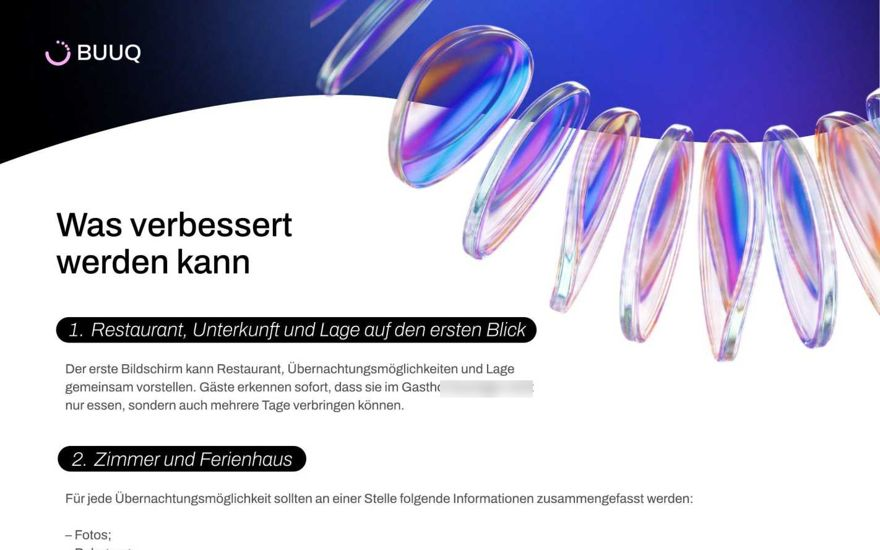
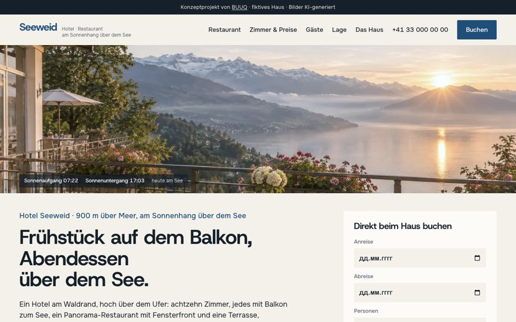
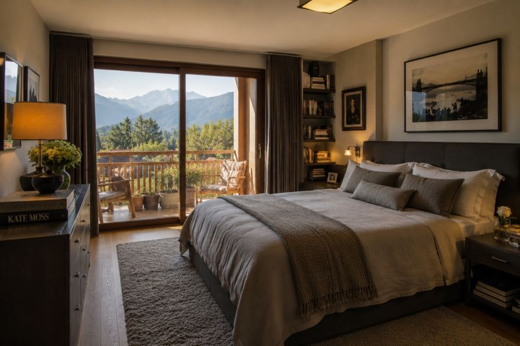
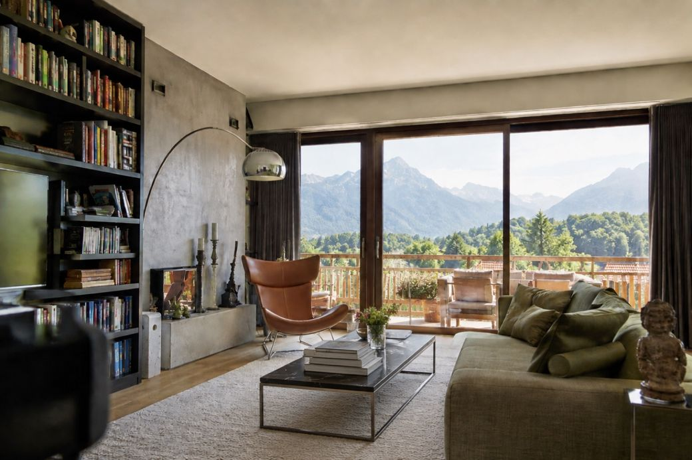
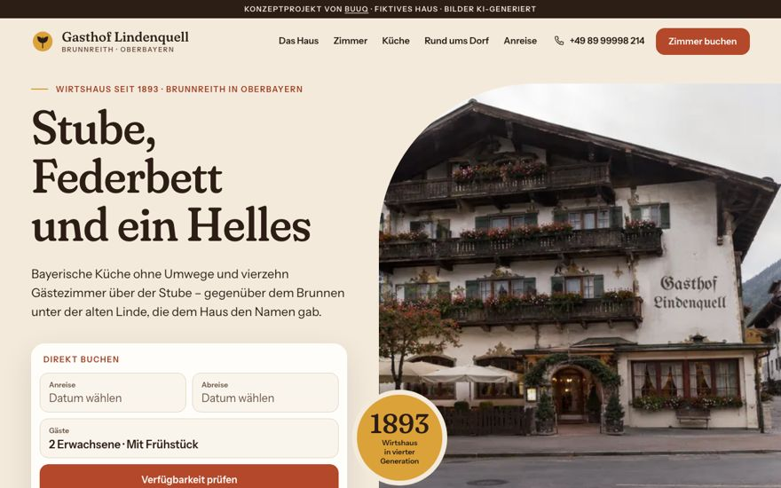
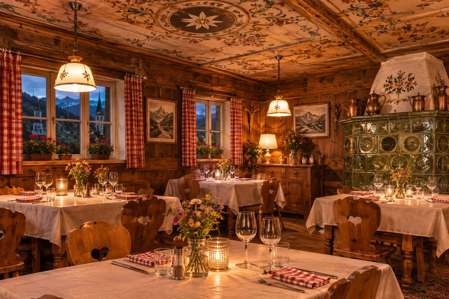

Ratgeber · Hotels
Direktbucher-Vorteile: kosten wenig, wirken viel
Wie bringt man den Gast dazu, über die Website zu buchen? Welche Boni erhöhen den Wert der Direktbuchung wirklich? Es gibt mehr Möglichkeiten, als man denkt — und die meisten kosten das Haus fast nichts.
Das Prinzip ist immer dasselbe: Der Bonus kostet das Haus wenig — und ist für den Gast spürbar wertvoll. Die besten Boni erzählen eine Geschichte, die der Gast zu Hause weitererzählt.
Überraschungen bei der Anreise
- ein Willkommensgetränk
- regionale Produkte: Ist die Gegend für Käse, Brot, Wein, Mineralwasser oder Süßes bekannt — schenken Sie genau das
Komfort und Flexibilität
- kostenloser Early Check-in / Late Check-out
- Upgrade bei freier Kapazität
- Balkonzimmer ohne Aufpreis
- Gepäckaufbewahrung vor Anreise und nach Abreise
Essen und Getränke
- Frühstück gratis oder zum Sonderpreis
- Kaffee mit Dessert
- ein Getränk an der Bar
- kostenloser Tee während des Aufenthalts
Wenn es einen Spa gibt
- eine zusätzliche Saunastunde
- Bademantel ohne Aufpreis
- ein kleines Wellness-Set
- bevorzugte Termine und Massage-Rabatt
- freier Spa-Zugang, wenn er sonst kostenpflichtig ist
Erlebnisse und Lokales
- persönliche Karte mit Routen und Ausflugszielen
- «Geheimtipps» vom Inhaber
- Leihräder oder Nordic-Walking-Stöcke gratis
- ein Bonus vom lokalen Partner — etwa ein Ausritt
Was der Vorteil das Haus kostet — und was er dem Gast «wert» ist
| Vorteil | Kostet das Haus | Wert für den Gast |
|---|---|---|
| Willkommensgetränk / regionale Produkte | ≈ 2–8 € | ●●● erster Eindruck und eine Geschichte, die man zu Hause erzählt |
| Early Check-in / Late Check-out | 0 € bei Verfügbarkeit | ●●● ein ganzer zusätzlicher Urlaubstag |
| Zimmer-Upgrade | 0 € bei freier Kapazität | ●●● das Gefühl, bevorzugt zu werden |
| Frühstück geschenkt | ≈ 8–12 € | ●●● greifbare Ersparnis, sichtbar beim Preisvergleich |
| Saunastunde / Spa-Extra | ≈ 0–5 € | ●●○ ein Grund, genau Ihr Haus zu wählen |
| Karte mit Geheimtipps | 0 € (einmal erstellen) | ●●○ persönliche Note, ein Grund wiederzukommen |
Richtwerte, abhängig vom Haus; Wert nach Erfahrung unserer Projekte: ●●● hoch · ●●○ spürbar.
Welcher Vorteil passt zu welchem Haus
Derselbe Bonus wirkt im Stadthotel und im Ferienhotel unterschiedlich. Die Auswahl nach Haustyp:
Stadthotel
- Late Check-out — das Wertvollste für Wochenendgäste
- Parkplatz inklusive oder reserviert
- Frühstück geschenkt
- Gepäckaufbewahrung nach dem Check-out
Ferien- & Wellnesshotel
- Spa-Extras: Saunastunde, Massage-Rabatt
- Leihräder, Nordic-Walking-Stöcke
- regionale Produkte zur Begrüßung
- Geheimtipps-Karte vom Inhaber
Pension & Gästehaus
- das Persönliche: Begrüßung durch den Inhaber
- flexible An- und Abreise nach Absprache
- hausgemachtes zum Frühstück
- ein Getränk am Abend «aufs Haus»
So kommunizieren Sie den Bonus, damit er wirkt
Ein Bonus wirkt nur vor der Zahlung. Nennen Sie ihn direkt am Buchen-Button, in einer Zeile: «Bei Direktbuchung — Frühstück geschenkt». Wie das in der Zimmerkarte aussieht, zeigt die Referenz im Artikel «Warum Gäste nicht auf der Hotel-Website buchen».
Häufige Fragen
Was wirkt besser — Rabatt oder Geschenk?
Ein Geschenk mit Geschichte (regionale Produkte, Geheimtipps) bleibt in Erinnerung und bringt Wiederkehrer; ein Rabatt ist leichter zu kommunizieren. Die starke Kombination: kleiner Rabatt plus ein greifbarer Bonus.
Wie viele Boni soll ich anbieten?
Einen oder zwei, nicht mehr. Eine lange Liste verwässert den Wert und erschwert die Wahl. Nehmen Sie, was Ihrem Haus leichtfällt — und präsentieren Sie es als Privileg des Direktbuchers.
Welcher Vorteil passt zu einem Stadthotel?
Late Check-out, Parkplatz und Frühstück — Zeit und Bequemlichkeit schlagen in der Stadt jedes Geschenk. Im Ferienhotel gewinnen Spa-Extras und lokale Erlebnisse.
Какой бонус подходит городскому отелю?
Поздний выезд, парковка и завтрак — в городе время и удобство ценнее любого подарка. В курортном отеле выигрывают спа-бонусы и местные впечатления.
Kostenloses Website-Audit für Ihr Haus
Wir prüfen Ihre Website so gründlich wie die 28 Häuser in unserer Statistik — und zeigen, was zuerst zu beheben ist.
- Audit mit konkreten Punkten — keine allgemeinen Ratschläge
- Kostenlose Konzept-Vorschau: so kann Ihre Website aussehen
- 30 Minuten Gespräch — unverbindlich


Weiterlesen

AuslastungHotelauslastung erhöhen: 6 Hebel, die Sie selbst in der Hand haben
Sechs Hebel von Erwartungen bis Rückkehrer — mit Checkliste.
Lesen →
DirektbuchungWarum Gäste nicht auf der Hotel-Website buchen
Fünf Ängste, fünf Schritte, Referenz-Zimmerkarte, Daten aus 28 Audits.
Lesen →
ChecklisteWas auf eine Hotel-Website gehört: die komplette Checkliste
Vom ersten Bildschirm bis Impressum — zum Abhaken.
Lesen → Systeme
SystemeBuchungssysteme für Hotels: welches wofür — und was es kostet
IBE, Channel-Manager, PMS — mit Preisen und Rechenbeispiel.
Lesen → Immobilien
ImmobilienWebsite für Bauträger: Vertrauen verkaufen, bevor gebaut ist
Renderings, Wohnungsfinder, Baufortschritt, Antworten 24/7.
Lesen →
RestaurantsRestaurant-Website: Reservierungen ohne Provision
Speisekarte als Seite, Reservierung in zwei Berührungen.
Lesen →